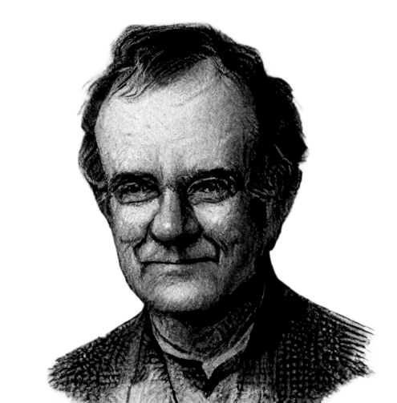

Tufte-Quarto Project Type
Documentation

Welcome
The Tufte-Quarto project is an homage to Edward Tufte. It simplifies the production of books using a layout that resembles his books(Edward R. Tufte 2001; Edward R. Tufte, Goeler, and Benson 1990; Edward R. Tufte et al. 1998) with a companion website. The goal is for the book and website share the same aesthetics.
Showcase
This documentation
This documention itself is using Tufte-Quarto.
Dissertation
As an example, my dissertation is being refactored with Tufte-Quarto, it gives an idea of a complex document built with Tufte-Quarto.
Usage
To use this project type just:
quarto use template fredguth/tufte-quarto
About Edward R. Tufte
Professor Emeritus of Political Science, Statistics and Computer Sciente at Yale University, Edward Tufte is an expert in the presentation of informational. Also known as the godfather of charts. Check his website.